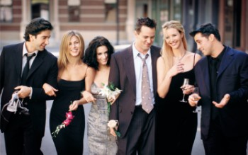
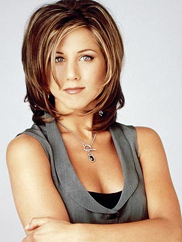
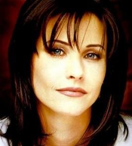
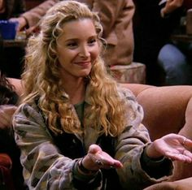
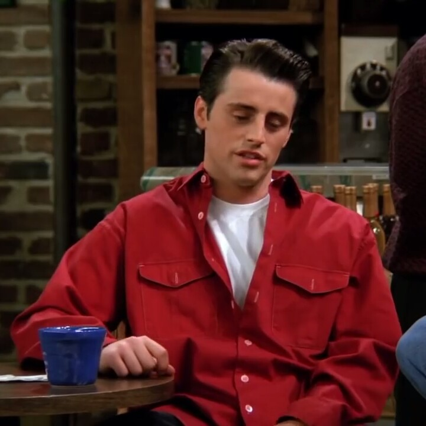
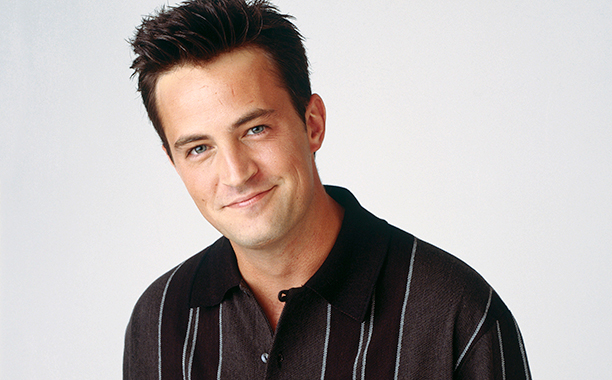
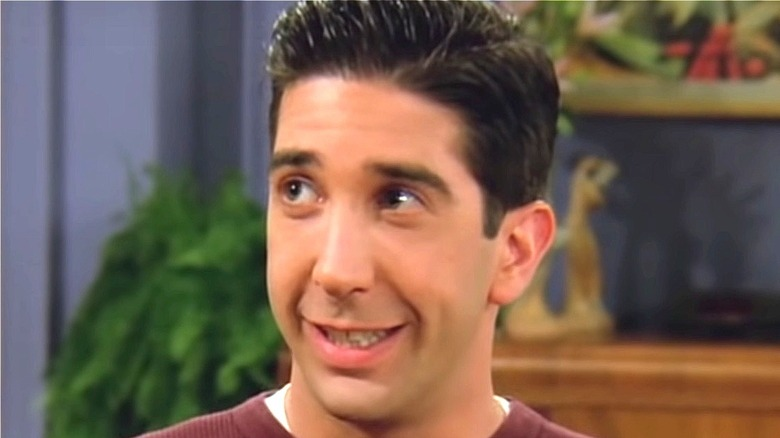

Friends was a TV serie that aired between 1994 and 2004.
Created by David Crane and Marta Kauffman, it showed a group of six friends in Manhattan Island, in the city of New York.
The original name of the serie was Insomnia Cafe, but after several modifications, it was finally named Friends.

Friends' main cast
The program has since reach an oustanding success, being still available to watch in HBO Max. The series was nominated for more than 60 awards and ranked no. 21 on TV Guide's 50 Greatest TV Shows of All Time.
The main characters of the show were: Rachel, Monica, Phoebe, Ross, Chandler and Joey.
Rachel Green

Rachel Green
Played by Jennifer Aniston, Rachel was a soon-to-be married spoiled woman who left her husband-to-be at the altar, moving in with her childhood's best friend, Monica Geller. Rachel evolves and matures as the time passes, starting her career as a waitress at Central Perk Cafe, and becoming a buyer at Ralph Lauren. She has a few relationships throught the series, and also has a daughter with Ross, name Emma.
Monica Geller

Monica Geller
Played by Courteney Cox, Monica is a perfectionist, bossy, and competitive person. Works as a chef in several restaurants throughout the show. Has a serious relationship with Richard Burke, a friend of her father, and the couple breaks up due to having different perspectives in life. Monica wants to have kids, while Richard believe this phase of his life is already over. Later she starts a relationship with Chandler, and what was supposed to be just a one-night thing turns into a beautiful romance. They are a couple who really support each other during the lows of life.
Phoebe Buffay

Phoebe Buffay
Played by Lisa Kudrow, Phobe is a masseuse and a self-taught musician. She's the most ecletic of the group. She has a twin sister, Ursula, whom she doesn't talk to. Has a few serious relationships, including a scientist in season one, and a cop in season five. But it's with Mike that she finds a true companionship. Mike was introduced to her by Joey, who met him only a few hours before a double date he and Phobe had agreed to find partners for the other.
Joey Tribbiani

Joey Tribbiani
Played by Matt LeBlanc, he is an actor that struggles to reach his breakthrough. After a few years and some disappointment, he is finally able to land a part in the soap opera "Days of Our Lives". Chandler's roomate and best friend, has a crush on Rachel on season eight. He is the only single member of the group at the end of the series.
Joey has several catch phrases, such as: "How you doing?" and "JOEY DOESN'T SHARE FOOD!"
He proves to be a true friend, being the one that puts his friends first a lot of times durng the show.
Chandler Bing

Chandler Bing
Played by Matthew Perry, Chandler works with statistical analysis, although he hates his job. Develops a serious relationship with Monica, on season five, although they try hard to hide it from the group. He quits his job to start a career as a junior copyright later. He is the funny one of the group, always making jokes. He and Monica adopt twins in the final season, after not being successful in having a baby on their own.
Ross Geller

Ross Geller
Monica's geek older brother. A palaeontologist that works in a museum and has a son with hise ex-wife Carol, who left him for another woman. Has a huge crush on Rachel, with whom he develops an on-and-off relationship. He also has a daughter with Rachel, after a rebound night with her.